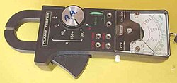

Амперметр
Электр чынжырындагы ток күчүн өлчөөчү прибор.
Амперме́тр (от ампер + μετρέω «измеряю») — прибор для измерения силы тока в амперах. Шкалу амперметров градуируют в микроамперах, миллиамперах, амперах или килоамперах в соответствии с пределами измерения прибора. В электрическую цепь амперметр включается последовательно[1] с тем участком электрической цепи, силу тока в котором измеряют. Поэтому, чем ниже внутреннее сопротивление амперметра (в идеале — 0), тем меньше будет влияние прибора на исследуемый объект, и тем выше будет точность измерения[2]. Для увеличения предела измерений амперметр снабжается шунтом (для цепей постоянного и переменного тока), трансформатором тока (только для цепей переменного тока) или магнитным усилителем (для цепей постоянного тока). Очень опасно пытаться использовать амперметр в качестве вольтметра (подключать его непосредственно к источнику питания): это приведёт к короткому замыканию. В технике используются амперметры с разной ценой деления, в зависимости от назначения.
Электр тизмегиндеги ток күчүн аныктоодо жана физикалык лабораториялык иштерде.
Магнит талаасынын кыймылдуу рамкадагы ток менен өз ара аракеттенишүүсүнө таянат.
Приборду чынжырга параллель туташтырууга болбойт! Бул кыска чыңалууга алып келет.
Микроамперметр жана миллиамперметр сыяктуу жогорку сезгичтиктеги түрлөрү да бар.